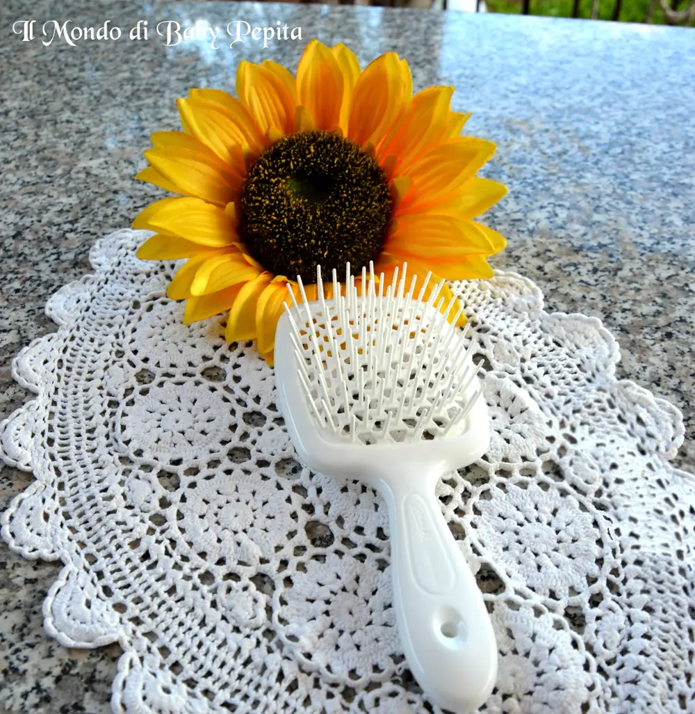
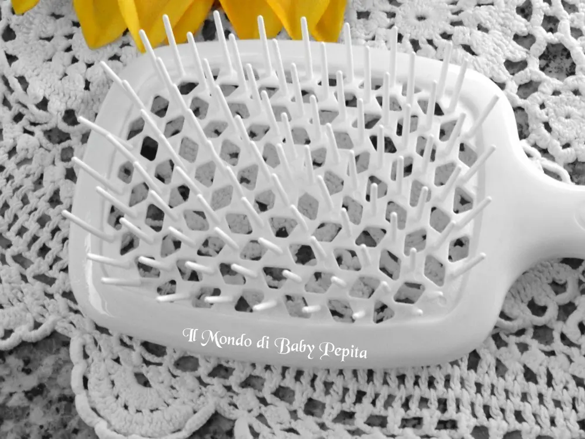
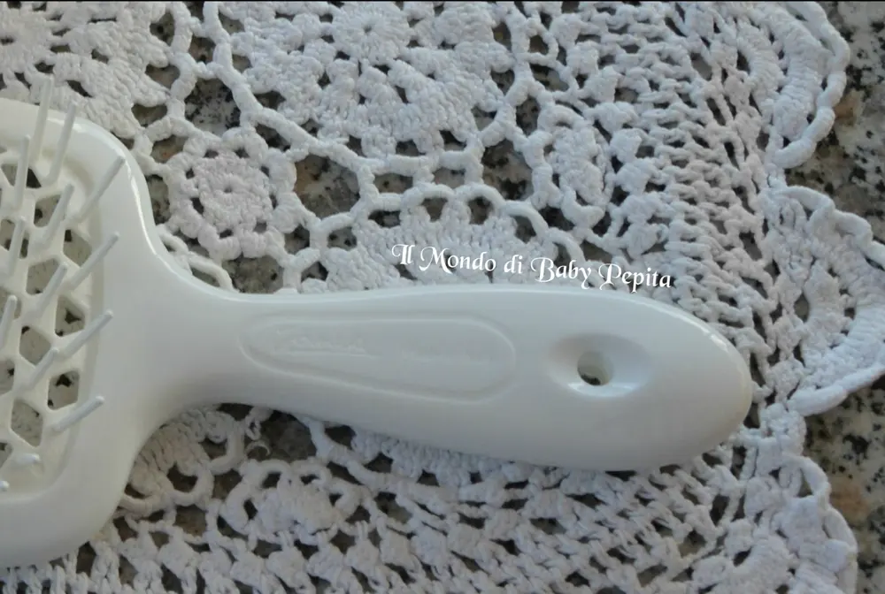
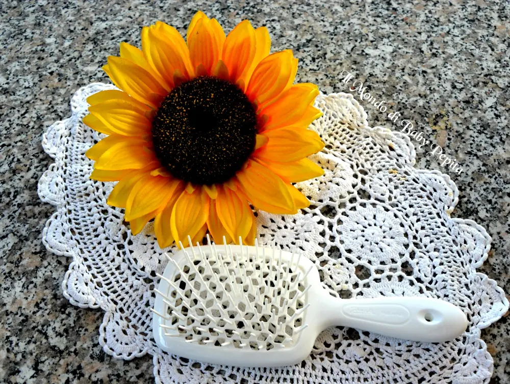
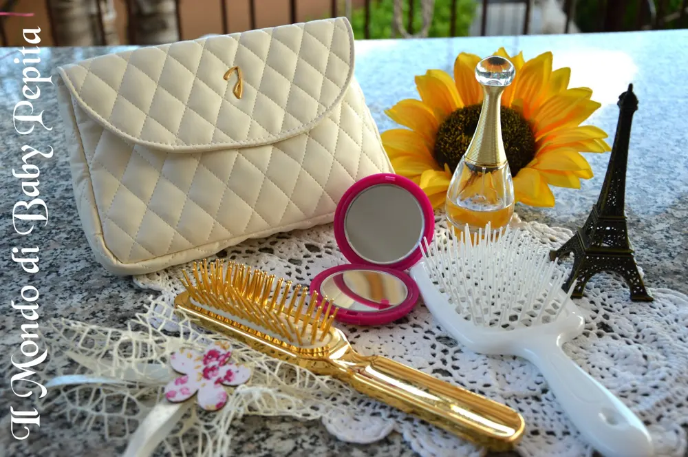

JANEKE - spazzola superbrush

Eccoci di nuovo con il nostro appuntamento settimanale con quest'azienda che stiamo conoscendo ed imparando ad apprezzare settimana dopo settimana. La Janeke studia le sue linee pensando ad un prodotto ad alto valore estetico, raffinato e intramontabile. Non vi avevo però detto finora che la Janeke ha uno store sia a Dubai, che a Milano ed uno anche a Monaco dove provare con mano prima di acquistare.Oggi voglio parlarvi della spazzola Superbrush, grande abbastanza per chi ha una folta chioma indomabile.
La Janeke studia le sue linee pensando ad un prodotto ad alto valore estetico, raffinato e intramontabile. Non vi avevo però detto finora che la Janeke ha uno store sia a Dubai, che a Milano ed uno anche a Monaco dove provare con mano prima di acquistare.Oggi voglio parlarvi della spazzola Superbrush, grande abbastanza per chi ha una folta chioma indomabile.

E' costituita con un fondo forato che permette il passaggio dell'aria calda dell'asciugacapelli per asciugare in modo uniforme tutti i capelli.Asciugare i capelli con questa spazzola sarà meno stressante e più veloce.

Testata sia su capelli bagnati che districa i nodi con gran facilità senza insistere tanto, sia sui capelli asciutti.

 Una spazzola che non può mancare nel beauty anche per le vacanze, che stiamo lì a fare il doppio dei shampoo tra piscine, mare e sudore :D con la spazzola superbrush non sarà più un problema pettinare i nostri capelli.
Una spazzola che non può mancare nel beauty anche per le vacanze, che stiamo lì a fare il doppio dei shampoo tra piscine, mare e sudore :D con la spazzola superbrush non sarà più un problema pettinare i nostri capelli.
Beh speranzosi che oltre lo store online che quelli fisici a Dubai, Monaco e Milano possa la Janeke inaugurare altri store in diverse città italiane e non, io vi consiglio di acquistare questa bella spazzola che sarà di sicuro un piacere dopo spazzolare i vostri capelli.
Prezzo: 12,00 €Il loro sito: http://janeke.it/Facebook: https://www.facebook.com/janeke1830/?fref=tsIn quanto a me potete seguirmi in tutti i miei social:FACEBOOKINSTAGRAMTWITTERYOUTUBESNAPCHAT